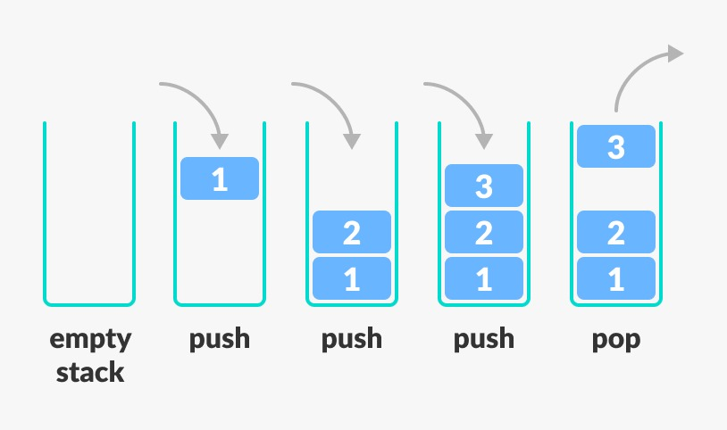

☰ Topics
Best Resources For Data Structures
Are you confused from where to learn dsa and are you unable to choose good resources???In this website we are providing the best resources collected from various websites for dsa topic wise and also with the questions to practice.
What is Data Structure?
Before defining data structures, let’s back up a little and ask, “What is data?” Here’s a quick answer: Data is information optimized for processing and movement, facts and figures stored on computers.
Data structures are a specific way of organizing data in a specialized format on a computer so that the information can be organized, processed, stored, and retrieved quickly and effectively. They are a means of handling information, rendering the data for easy use.
Every application, piece of software, or programs foundation consists of two components: algorithms and data. Data is information, and algorithms are rules and instructions that turn the data into something useful to programming.Put another way, remember these two simple equations:
Related data + Permissible operations on the data = Data Structures
Data structures + Algorithms = Programs
This page provides some of the best resources for different data structures (DS) with topic-wise problems.
For documentation geeks for geeks and javatpoint are best.
The links for the documentation are -
DSA practice sheets
Language wise DSA Playlist
1.Arrays
The very first and basic topic of DSA.
What is Array in Data Structure?
An array is a linear data structure for storing more than one data item that has a similar data type. The items of an array are allocated at adjacent memory locations. These memory locations are called elements of that array. The total number of elements in an array is called length.
The details of an array are accessed about its position. This reference is called index or subscript.The main advantage of an array over any other data structure is any location can be accessed in constant time in an array which makes it so useful in the design of other data structures. So an array is used as a basic building block in many data structures.
Applications of an array:
Apart from being widely used in programming, arrays have additional applications as well:
1. Used in mathematical problems like matrices etc.
2. They are used in the implementation of other data structures like linked lists etc.
3. Database records are usually implemented as arrays.
YouTube resources for Array-
- Introduction to Arrays and ArrayList
- Operations on Arrays in Data Structures: Traversal, Insertion, Deletion and Searching
- Geeks for Geeks problem solutions
- Problems from Love Babbar DSA sheet
- Array problems with implementation in java
Here are the links for the problems to practice:
Bare-minimum problems:
Bonus problems:
2.Strings
What is String?
Strings are defined as an array of characters.Strings in C are stored as null character, '', terminated character arrays.
This means that the length of a string is the number of characters it contains one more to store the null character.
Common string operations include finding lengths, copying, searching, replacing and counting the occurrences of specific characters and worlds.
Basic Concepts
- int length(): Returns the number of characters in the String
- char charAt(int i): Returns the character at i index
- String substring (int i): Return the substring from the ith index character to end.
- String substring (int i, int j): Returns the substring from i to j-1 index.
- String concat( String str): Concatenates specified string to the end of this string.
- int indexOf (String s): Returns the index within the string of the first occurrence of the specified string.
- int compareTo(String anotherString): Compares two string lexicographically.
- String toLowerCase(): Converts all the characters in the String to lower case.
YouTube resources for Strings-
Problems to Practice-
Bare-minimum:
Bonus problems:
3.LinkedLists
What is LinkedList in Data Structure?
A linked list is a linear data structure, in which the elements are not stored at contiguous memory locations. The elements in a linked list are linked using pointers., a linked list consists of nodes where each node contains a data field and a reference(link) to the next node in the list.
Types of Linked Lists
There are 3 different implementations of Linked List available, they are:
- Singly Linked List
- Doubly Linked List
- Circular Linked List
Let's know more about them and how they are different from each other.
Singly Linked List
Singly linked lists contain nodes which have a data part as well as an address part i.e. next, which points to the next node in the sequence of nodes.The operations we can perform on singly linked lists are insertion, deletion and traversal.
Doubly Linked List
In a doubly linked list, each node contains a data part and two addresses, one for the previous node and one for the next node.
Circular Linked List
In circular linked list the last node of the list holds the address of the first node hence forming a circular chain.
YouTube resources for Linked Lists-
Problems to Practice-
Bare-minimum:
Bonus problems:
4.Stacks
What is Stack in Data Structure?
A stack is a linear data structure, that follows Last In First Out(LIFO) principle or First In Last Out(FILO) principle in which the operations are performed.

Mainly the following basic operations are performed in the stack:
1.Push: Adds an item in the stack. If the stack is full, then it is said to be an Overflow condition.
2.Pop: Removes an item from the stack. The items are popped in the reversed order in which they are pushed. If the stack is empty, then it is said to be an Underflow condition.
3.Peek or Top: Returns the top element of the stack.
Display:To display the elements present in the stack.
Applications of stack:
- Expression Evaluation
- Expression Conversion
i. Infix to Postfix
ii. Infix to Prefix
iii. Postfix to Infix
iv. Prefix to Infix
- Backtracking
- Memory Management
YouTube resources for Stacks-
- Introduction to Stack & its Operations -Push Pop | Applications of Stack
- Stacks and Queues complete tutorial
- Stack in One Video
- Infix to Postfix
- Stack interview questions
Here are the links for the problems to practice:-
Bare-minimum:
Bonus problems:
5.Searching Algorithms
Searching is an operation or a technique that helps finds the place of a given element or value in the list. Any search is said to be successful or unsuccessful depending upon whether the element that is being searched is found or not
Some of the standard searching technique
- Linear search
- Binary search
Linear search
Linear search is a very basic and simple search algorithm. In Linear search, we search an element or value in a given array by traversing the array from the starting, till the desired element or value is found.

Youtube resource for Linear search
Binary search
Binary Search is used with sorted array or list. In binary search, we follow the following steps:
- We start by comparing the element to be searched with the element in the middle of the list/array
- If we get a match, we return the index of the middle element
- If we do not get a match, we check whether the element to be searched is less or greater than in value than the middle element.
- If the element/number to be searched is greater in value than the middle number, then we pick the elements on the right side of the middle element(as the list/array is sorted, hence on the right, we will have all the numbers greater than the middle number), and start again from the step 1.
- If the element/number to be searched is lesser in value than the middle number, then we pick the elements on the left side of the middle element, and start again from the step 1.

Binary Search is useful when there are large number of elements in an array and they aresorted. So a necessary condition for Binary search to work is that the list/array should be sorted.
Features of Binary Search
- It is great to search through large sorted arrays.
- It has a time complexity of O(log n) which is a very good time complexity. It has a simple implementation
Youtube resources for binary search
6.Sorting
A sorting algorithm is an algorithm that puts elements of a list in a certain order((numerical, chronological, alphabetical, hierarchical etc)
1. Bubble sort
This algorithm uses multiple passes and in each pass the first and second data items are compared. if the first data item is bigger than the second, then the two items are swapped. Next the items in second and third position are compared and if the first one is larger than the second, then they are swapped, otherwise no change in their order. This process continues for each successive pair of data items until all items are sorted.

2.Selection sort
Selection sort algorithm is one of the simplest sorting algorithm, which sorts the elements in an array by finding the minimum element in each pass from unsorted part and keeps it in the beginning. This sorting technique improves over bubble sort by making only one exchange in each pass.

3.Insertion sort
Insertion sorts works by taking elements from the list one by one and inserting them in theircurrent position into a new sorted list .The steps are:

- Compare the current element (key) to its predecessor.
- If the key element is smaller than its predecessor, compare it to the elements before. Move the greater elements one position up to make space for the swapped element.
4. Quick sort
Quick sort is a divide and conquer algorithm. Quick sort first divides a large list into two smaller sub�lists: the low elements and the high elements. Quick sort can then recursively sort the sub-lists.The steps are:
- Pick an element, called a pivot, from the list
- Reorder the list so that all elements with values less than the pivot come before the pivot, while all elements with values greater than the pivot come after it (equal values can go either way). After this partitioning, the pivot is in its final position. This is called the partition operation
- Recursively apply the above steps to the sub-list of elements with smaller values and separately the sub-list of elements with greater values.

Youtube resource for Quick sort
5.Merge sort
Merge sort is based on Divide and conquer method. It takes the list to be sorted and divide it in half to create two unsorted lists. The two unsorted lists are then sorted and merged to get a sorted list. The two unsorted lists are sorted by continually calling the merge-sort algorithm; we eventually get a list of size 1 which is already sorted. The two lists of size 1 are then merged.

Youtube resource for Merge sort
7.Queue
A queue is a data structure that is best described as "first in, first out". A queue is another special kind of list, where items are inserted at one end called the rear and deleted at the other end called the front. A real world example of a queue is people waiting in line at the bank. As each person enters the bank, he or she is "enqueued" at the back of the line. When a teller becomes available, they are "dequeued" at the front of the line.
Applications of queue
- It is used to schedule the jobs to be processed by the CPU
- When multiple users send print jobs to a printer, each printing job is kept in the printing queue. Then the printer prints those jobs according to first in first out (FIFO) basis.
- Breadth first search uses a queue data structure to find an element from a graph.

Youtube resource for implementation of queue
Practice Problems:
Bare-minimum:
Bonus Problems
8.Trees
What is Tree in Data Structure?
A tree is a hierarchical data structure and it is a collection of entities called nodes. Nodes are connected by edges. Each node contains a value or data, and it may or may not have a child node .The first node of the tree is called the root. If this root node is connected by another node, the root is then a parent node and the connected node is a child.All Tree nodes are connected by links called edges. It’s an important part of trees, because it’s manages the relationship between nodes.Leaves are the last nodes on a tree. They are nodes without children. Like real trees, we have the root, branches, and finally the leaves.
Applications of Trees-
- Store hierarchical data, like folder structure, organization structure, XML/HTML data.
- Binary Search Tree is a tree that allows fast search, insert, delete on a sorted data. It also allows finding closest item
- Heap is a tree data structure which is implemented using arrays and used to implement priority queues.
- B-Tree and B+ Tree : They are used to implement indexing in databases.
YouTube resources for Trees-
Problems to Practice-
Bare-minimum:
Bonus problems:
9.Graphs
What is Graph in Data Structure?
A Graph is a non-linear data structure consisting of nodes and edges. The nodes are sometimes also referred to as vertices and the edges are lines or arcs that connect any two nodes in the graph.
Applications of Graphs-
- In Computer science graphs are used to represent the flow of computation.
- Google maps uses graphs for building transportation systems, where intersection of two(or more) roads are considered to be a vertex and the road connecting twovertices is considered to be an edge, thus their navigation system is based on the algorithm to calculate the shortest path between two vertices.
- In Facebook, users are considered to be the vertices and if they are friends then there is an edge running between them. Facebook’s Friend suggestion algorithm uses graph theory.Facebook is an example of undirected graph.
- In World Wide Web, web pages are considered to be the vertices. There is an edge from a page u to other page v if there is a link of page v on page u.This is an example of Directed graph. It was the basic idea behind Google Page Ranking Algorithm.
YouTube resources for Graphs-
Problems to Practice-
Bare-minimum:
Bonus problems:
We are using data structures in our everyday lives without even knowing it. ... Data structure provides the right way to organize information in the digital space. The data structure is a key component of Computer Science and is largely used in the areas of Artificial Intelligence, operating systems, graphics, etc. Although there are many websites available and everything is on internet but scattered. This website provides everything from theory to problems at the same place.
Hope this website will be useful to you.